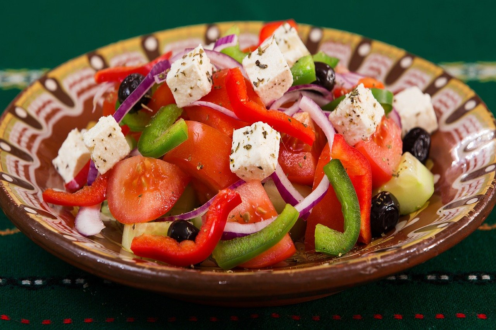
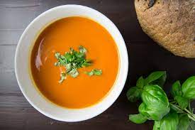
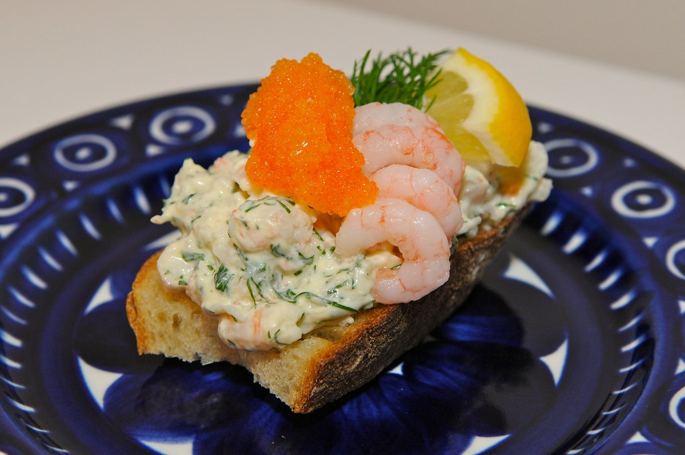
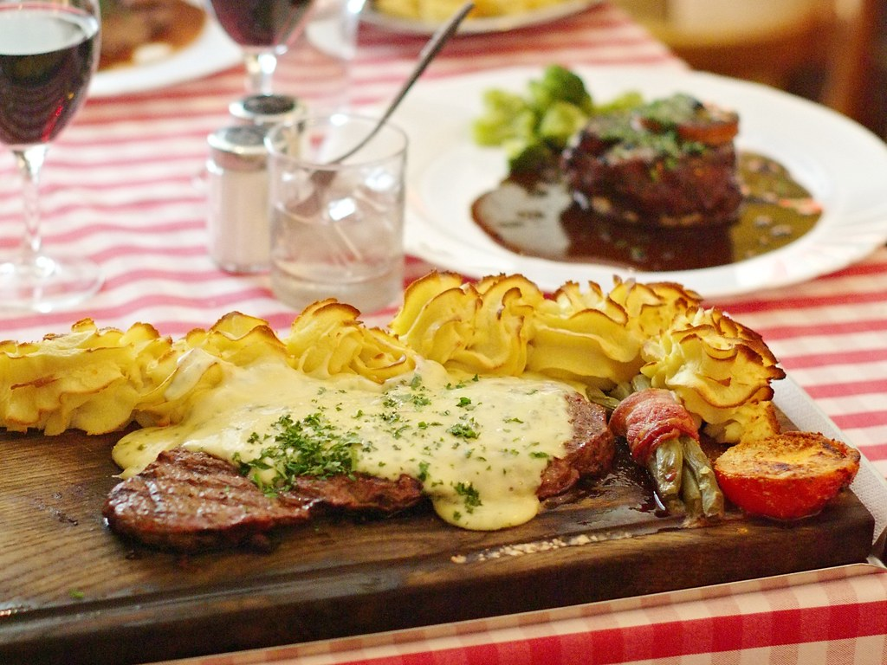
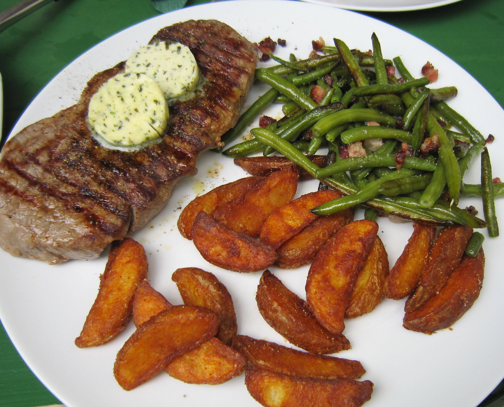
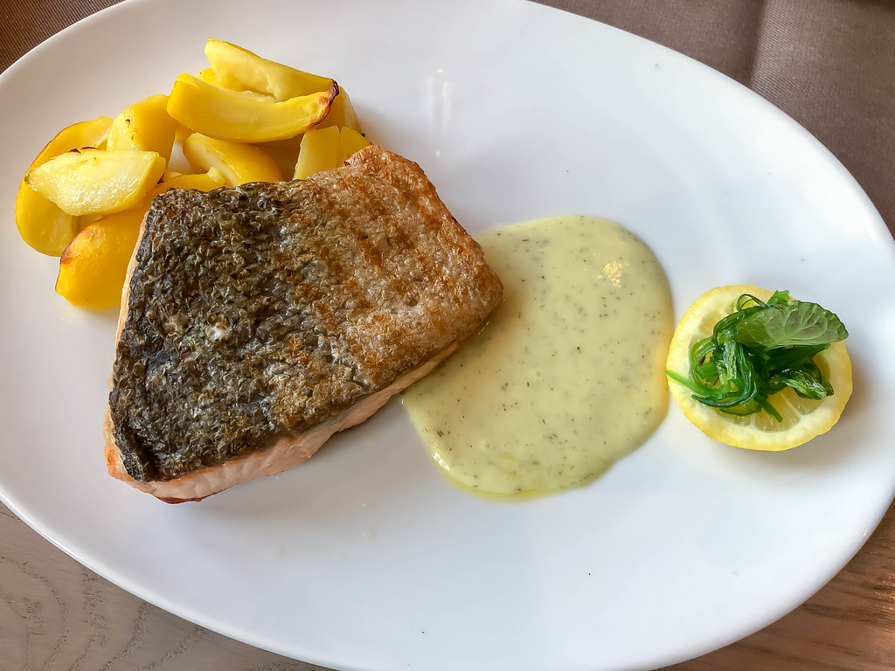
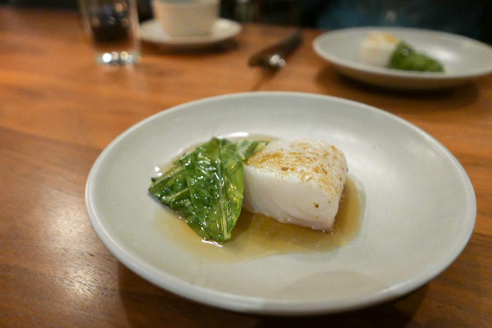

Ur vår à la carte meny
Grekisk sallad med vitlöksbröd 54:-

Dagens soppa 50:-

Toast Skagen 56:-
Kött
EatIT:s plankstek. 220 g oxfilé på ekplanka med pepparsås, sparris och bearnaisesås. 154:-

Halstrad lövbiff med kryddsmör, ädelost eller pickels. Serveras med klyftpotatis och smörfrästa champinjoner. 140:-
Fläskfilé ”Oscar”. En svensk klassiker där fläskfilén serveras med bearnaisesås, sparris och räkor 128:-
Fisk
Halstrad laxfjäril, serveras med sparris, vitlöksbearnaisesås, löjromsklick och kokt potatis 120:-

Pocherad hälleflundra på klassiskt vis med färskriven pepprarrot och skriat smör 176:-
Pastarätter

Lasagne al forno. Pastaplattor som är varvade med köttfärssås och bechamelsås som sedan gratineras med parmesanost 84:-

Fettuccine a la pesto. Bandspaghetti med pesto, grönsaker och kycklingfilé 69:-
Barnmatsedel
Korv eller hamburgare med pommes frites 43:-Barnpizza 47:-
Spaghetti med köttfärssås 42:-
Efterrätter
Gammaldags vaniljglass. Serveras med chokladsås eller hallonsås 49:-Årtidssorbet 63:-
Petit four 27:-